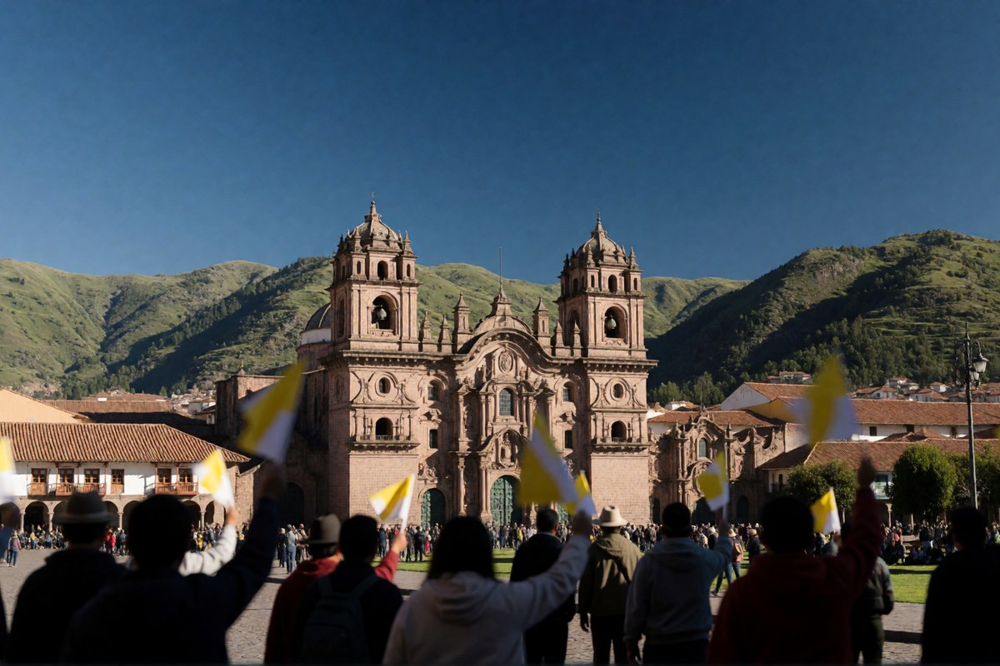

Attualità · 15 novembre 2026
Papa Leone a 3.400 metri, poi in Amazzonia: «Quel sangue reclama giustizia»

Un mese dopo l'operazione al polmone, il Pontefice ha recitato l'Angelus a Cusco e nello stesso giorno è sceso a Pucallpa. Parole durissime sulle ferite della foresta e sui capi indigeni uccisi.
di Franco Zanghì
Domenica 15 novembre papa Leone ha recitato l'Angelus a Cusco, sulle Ande peruviane, a 3.399 metri di altitudine, l'antica capitale dell'impero inca. È la tappa più faticosa del viaggio in America Latina, cominciato il 6 novembre in Uruguay e proseguito in Argentina. L'ANSA parla di 3 voli in un solo giorno.
A ottobre il Papa era stato operato al policlinico Gemelli di Roma e, dopo una settimana di ricovero, aveva promesso di riprendere le attività un po' alla volta.
A Cusco
Nell'antica capitale inca ha incontrato i fedeli nel parco archeologico di Saqsaywaman e ha poi attraversato la folla in papamobile. Lì, ha detto, c'è un popolo che sa soffrire con dignità. Secondo La Stampa ha parlato anche della malattia: pensare che tolga valore a una persona, ha detto, è «una grande menzogna».
A Pucallpa
Nel pomeriggio l'aereo lo ha riportato quasi al livello del mare, a Pucallpa, nel cuore dell'Amazzonia peruviana, dove ha incontrato i missionari e i rappresentanti dei popoli amazzonici. Le parole sono state durissime: le ferite di quella terra, ha detto, non si sono rimarginate, «anzi si sono aggravate».
Negli ultimi anni molti capi indigeni sono stati uccisi per aver difeso i loro territori. «Il sangue di questi fratelli», ha detto il Papa, «grida a Dio e agli uomini reclama giustizia». Le sue parole sono riportate dal SIR, l'agenzia dei vescovi italiani.
Le tappe precedenti
Nei giorni scorsi, a Zaña, nel nord del Paese, aveva ricordato le sofferenze e le umiliazioni degli schiavi africani portati in Perù. Sabato era tornato a Chiclayo, la diocesi che aveva guidato da vescovo. Il rientro a Roma era previsto per la mattina di martedì 17 novembre.
Si discuterà a lungo se un Papa debba parlare di foreste e di mercato. Ma il fatto che resta è un altro: persone uccise perché difendevano la propria casa. È il diritto più antico che ci sia, quello di restare sulla propria terra. E un uomo di 71 anni, un mese dopo un intervento al polmone, è andato a dirlo di persona, prima a 3.400 metri e poi in mezzo alla foresta.
Fonti
- ANSA, «Il Papa in Perù, oggi raggiunge Cusco a più di 3mila metri di altezza», 15 novembre 2026
- SIR, agenzia della Conferenza episcopale italiana, discorso di papa Leone a Pucallpa, 15 novembre 2026
- La Stampa, le parole del Papa sulla malattia a Cusco, 15 novembre 2026
Il programma del viaggio e l'orario del rientro a Roma erano quelli comunicati alla data di pubblicazione. Versione scritta della notizia uscita sui canali dell'autore il 16 novembre 2026.